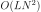
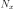
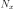
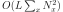
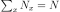
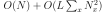
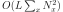
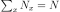
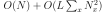

Jeux de dictionnaires, plus grand suffixe commun#
Les dictionnaires sont très utilisés pour associer des choses entre elles, surtout quand ces choses ne sont pas entières. Le notebook montre l’intérêt de perdre un peu de temps pour transformer les données et rendre un calcul plus rapide.
Enoncé#
Le texte suivant est un poème d’Arthur Rimbaud, Les Voyelles. On veut en extraire tous les mots.
[1]:
poeme = """
A noir, E blanc, I rouge, U vert, O bleu, voyelles,
Je dirai quelque jour vos naissances latentes.
A, noir corset velu des mouches éclatantes
Qui bombillent autour des puanteurs cruelles,
Golfe d'ombre; E, candeur des vapeurs et des tentes,
Lance des glaciers fiers, rois blancs, frissons d'ombelles;
I, pourpres, sang craché, rire des lèvres belles
Dans la colère ou les ivresses pénitentes;
U, cycles, vibrements divins des mers virides,
Paix des pâtis semés d'animaux, paix des rides
Que l'alchimie imprime aux grands fronts studieux;
O, suprême clairon plein de strideurs étranges,
Silences traversés des Mondes et des Anges:
—O l'Oméga, rayon violet de Ses Yeux!
"""
[2]:
def extract_words(text):
# ce n'est pas la plus efficace des fonctions mais ça fait ce qu'on veut
spl = (
text.lower()
.replace("!", "")
.replace(",", "")
.replace(";", "")
.replace(".", "")
.replace(":", "")
.replace("'", " ")
.split()
)
return spl
print(extract_words(poeme))
['a', 'noir', 'e', 'blanc', 'i', 'rouge', 'u', 'vert', 'o', 'bleu', 'voyelles', 'je', 'dirai', 'quelque', 'jour', 'vos', 'naissances', 'latentes', 'a', 'noir', 'corset', 'velu', 'des', 'mouches', 'éclatantes', 'qui', 'bombillent', 'autour', 'des', 'puanteurs', 'cruelles', 'golfe', 'd', 'ombre', 'e', 'candeur', 'des', 'vapeurs', 'et', 'des', 'tentes', 'lance', 'des', 'glaciers', 'fiers', 'rois', 'blancs', 'frissons', 'd', 'ombelles', 'i', 'pourpres', 'sang', 'craché', 'rire', 'des', 'lèvres', 'belles', 'dans', 'la', 'colère', 'ou', 'les', 'ivresses', 'pénitentes', 'u', 'cycles', 'vibrements', 'divins', 'des', 'mers', 'virides', 'paix', 'des', 'pâtis', 'semés', 'd', 'animaux', 'paix', 'des', 'rides', 'que', 'l', 'alchimie', 'imprime', 'aux', 'grands', 'fronts', 'studieux', 'o', 'suprême', 'clairon', 'plein', 'de', 'strideurs', 'étranges', 'silences', 'traversés', 'des', 'mondes', 'et', 'des', 'anges', '—o', 'l', 'oméga', 'rayon', 'violet', 'de', 'ses', 'yeux']
Exercice 1 : trouver les deux mots qui partagent le plus grand suffixe en commun#
[ ]:
Exercice 2 : constuire un dictionnaire qui associe à chaque lettre tous les mots se terminant par celle-ci#
[ ]:
Exercice 3 : trouver les deux mots qui partagent le plus grand suffixe en commun en utilisant le dictionnaire précédent#
[ ]:
Exercice 4 : mesurer le temps pris par chaque fonction#
La fonction perf_counter est parfaite pour ça.
[ ]:
Exercice 5 : expliquer pourquoi telle méthode est plus rapide.#
La réponse devrait guider vers une méthode encore plus rapide.
[ ]:
Exercice 6 : pousser l’idée plus loin et construire un trie#
Indexer les mots par leur dernière lettre permet d’aller plus vite. Il faut maintenant trouver le suffixe le plus long dans chaque sous-groupe de mots. Ce problème est identique au précédent sur tous les mots précédents auxquels la dernière aurait été ôtée. Comment exploiter cette idée jusqu’au bout ?
[ ]:
Réponses#
Exercice 1 : trouver les deux mots qui partagent le plus grand suffixe en commun#
Ce n’est qu’une suggestion. La fonction repose sur trois boucles, la première parcourt différentes tailles de suffixe, les deux autres regardes toutes les paires de mots.
[3]:
def plus_grand_suffix_commun(mots):
longueur_max = max([len(m) for m in mots])
meilleure_paire = None
meilleur_suffix = None
# On peut parcourir les tailles de suffixe dans un sens croissant
# mais c'est plus efficace dans un sens décroissant dans la mesure
# où le premier suffixe trouvé est alors nécessairement le plus long.
for i in range(longueur_max - 1, 0, -1):
for m1 in mots:
for m2 in mots: # ici, on pourrait ne parcourir qu'une partie des mots
# car m1,m2 ou m2,m1, c'est pareil.
if m1 == m2:
continue
if len(m1) < i or len(m2) < i:
continue
suffixe = m1[-i:]
if m2[-i:] == suffixe:
meilleur_suffix = suffixe
meilleure_paire = m1, m2
return meilleur_suffix, meilleure_paire
mots = extract_words(poeme)
plus_grand_suffix_commun(mots)
[3]:
('tentes', ('latentes', 'tentes'))
Exercice 2 : constuire un dictionnaire qui associe à chaque lettre tous les mots se terminant par celle-ci#
[4]:
mots = extract_words(poeme)
suffix_map = {}
for mot in mots:
lettre = mot[-1]
if lettre in suffix_map:
suffix_map[lettre].append(mot)
else:
suffix_map[lettre] = [mot]
suffix_map
[4]:
{'a': ['a', 'a', 'la', 'oméga'],
'r': ['noir', 'jour', 'noir', 'autour', 'candeur'],
'e': ['e',
'rouge',
'je',
'quelque',
'golfe',
'ombre',
'e',
'lance',
'rire',
'colère',
'que',
'alchimie',
'imprime',
'suprême',
'de',
'de'],
'c': ['blanc'],
'i': ['i', 'dirai', 'qui', 'i'],
'u': ['u', 'bleu', 'velu', 'ou', 'u'],
't': ['vert', 'corset', 'bombillent', 'et', 'et', 'violet'],
'o': ['o', 'o', '—o'],
's': ['voyelles',
'vos',
'naissances',
'latentes',
'des',
'mouches',
'éclatantes',
'des',
'puanteurs',
'cruelles',
'des',
'vapeurs',
'des',
'tentes',
'des',
'glaciers',
'fiers',
'rois',
'blancs',
'frissons',
'ombelles',
'pourpres',
'des',
'lèvres',
'belles',
'dans',
'les',
'ivresses',
'pénitentes',
'cycles',
'vibrements',
'divins',
'des',
'mers',
'virides',
'des',
'pâtis',
'semés',
'des',
'rides',
'grands',
'fronts',
'strideurs',
'étranges',
'silences',
'traversés',
'des',
'mondes',
'des',
'anges',
'ses'],
'd': ['d', 'd', 'd'],
'g': ['sang'],
'é': ['craché'],
'x': ['paix', 'animaux', 'paix', 'aux', 'studieux', 'yeux'],
'l': ['l', 'l'],
'n': ['clairon', 'plein', 'rayon']}
Exercice 3 : trouver les deux mots qui partagent le plus grand suffixe en commun en utilisant le dictionnaire précédent#
On reprend les deux ingrédients.
[5]:
def plus_grand_suffix_commun_dictionnaire(mots):
suffix_map = {}
for mot in mots:
lettre = mot[-1]
if lettre in suffix_map:
suffix_map[lettre].append(mot)
else:
suffix_map[lettre] = [mot]
tout = []
for cle, valeur in suffix_map.items():
suffix = plus_grand_suffix_commun(valeur)
if suffix is None:
continue
tout.append((len(suffix[0]), suffix[0], suffix[1]))
return max(tout)
mots = extract_words(poeme)
plus_grand_suffix_commun_dictionnaire(mots)
[5]:
(6, 'tentes', ('latentes', 'tentes'))
Exercice 4 : mesurer le temps pris par chaque fonction#
[6]:
from time import perf_counter
mots = extract_words(poeme)
debut = perf_counter()
for i in range(100):
plus_grand_suffix_commun(mots)
perf_counter() - debut
[6]:
0.5386918000003789
[7]:
debut = perf_counter()
for i in range(100):
plus_grand_suffix_commun_dictionnaire(mots)
perf_counter() - debut
[7]:
0.17898409999997966
Exercice 5 : expliquer pourquoi telle méthode est plus rapide.#
La seconde méthode est deux à trois fois plus rapide. Cela dépend du nombre de mots qu’on note N. Si on note L la longueur du plus grand mot, la première méthode a pour coût . La seconde est une succession de deux étapes. La première étape construit un dictionnaire en parcourant une seule fois la liste des mots. Son coût est  . La seconde utilise la première méthode mais sur des ensembles plus petits. Plus exactements, si  est le nombre de mots se
terminant pas
. La seconde utilise la première méthode mais sur des ensembles plus petits. Plus exactements, si  est le nombre de mots se
terminant pas  , alors le coût de la méthode est  avec . Il faut donc comparer à . Le second coût est plus petit.
, alors le coût de la méthode est  avec . Il faut donc comparer à . Le second coût est plus petit.
Exercice 6 : pousser l’idée plus loin et construire un trie#
Un trie est une structure de données permettant de trouver rapidement tous les mots partageant le même préfixe ou suffixe.
[8]:
def build_trie(liste):
trie = {}
for mot in liste:
noeud = trie
for i in range(0, len(mot)):
lettre = mot[len(mot) - i - 1]
if lettre not in noeud:
noeud[lettre] = {}
noeud = noeud[lettre]
noeud["FIN"] = 0
return trie
liste = ["zabc", "abc"]
t = build_trie(liste)
t
[8]:
{'c': {'b': {'a': {'z': {'FIN': 0}, 'FIN': 0}}}}
[9]:
mots = extract_words(poeme)
trie = build_trie(mots)
trie
[9]:
{'a': {'FIN': 0, 'l': {'FIN': 0}, 'g': {'é': {'m': {'o': {'FIN': 0}}}}},
'r': {'i': {'o': {'n': {'FIN': 0}}},
'u': {'o': {'j': {'FIN': 0}, 't': {'u': {'a': {'FIN': 0}}}},
'e': {'d': {'n': {'a': {'c': {'FIN': 0}}}}}}},
'e': {'FIN': 0,
'g': {'u': {'o': {'r': {'FIN': 0}}}},
'j': {'FIN': 0},
'u': {'q': {'l': {'e': {'u': {'q': {'FIN': 0}}}}, 'FIN': 0}},
'f': {'l': {'o': {'g': {'FIN': 0}}}},
'r': {'b': {'m': {'o': {'FIN': 0}}},
'i': {'r': {'FIN': 0}},
'è': {'l': {'o': {'c': {'FIN': 0}}}}},
'c': {'n': {'a': {'l': {'FIN': 0}}}},
'i': {'m': {'i': {'h': {'c': {'l': {'a': {'FIN': 0}}}}}}},
'm': {'i': {'r': {'p': {'m': {'i': {'FIN': 0}}}}},
'ê': {'r': {'p': {'u': {'s': {'FIN': 0}}}}}},
'd': {'FIN': 0}},
'c': {'n': {'a': {'l': {'b': {'FIN': 0}}}}},
'i': {'FIN': 0, 'a': {'r': {'i': {'d': {'FIN': 0}}}}, 'u': {'q': {'FIN': 0}}},
'u': {'FIN': 0,
'e': {'l': {'b': {'FIN': 0}}},
'l': {'e': {'v': {'FIN': 0}}},
'o': {'FIN': 0}},
't': {'r': {'e': {'v': {'FIN': 0}}},
'e': {'s': {'r': {'o': {'c': {'FIN': 0}}}},
'FIN': 0,
'l': {'o': {'i': {'v': {'FIN': 0}}}}},
'n': {'e': {'l': {'l': {'i': {'b': {'m': {'o': {'b': {'FIN': 0}}}}}}}}}},
'o': {'FIN': 0, '—': {'FIN': 0}},
's': {'e': {'l': {'l': {'e': {'y': {'o': {'v': {'FIN': 0}}},
'u': {'r': {'c': {'FIN': 0}}},
'b': {'m': {'o': {'FIN': 0}}, 'FIN': 0}}},
'FIN': 0,
'c': {'y': {'c': {'FIN': 0}}}},
'c': {'n': {'a': {'s': {'s': {'i': {'a': {'n': {'FIN': 0}}}}}},
'e': {'l': {'i': {'s': {'FIN': 0}}}}}},
't': {'n': {'e': {'t': {'a': {'l': {'FIN': 0}},
'FIN': 0,
'i': {'n': {'é': {'p': {'FIN': 0}}}}}},
'a': {'t': {'a': {'l': {'c': {'é': {'FIN': 0}}}}}}}},
'd': {'FIN': 0,
'i': {'r': {'i': {'v': {'FIN': 0}}, 'FIN': 0}},
'n': {'o': {'m': {'FIN': 0}}}},
'h': {'c': {'u': {'o': {'m': {'FIN': 0}}}}},
'r': {'p': {'r': {'u': {'o': {'p': {'FIN': 0}}}}},
'v': {'è': {'l': {'FIN': 0}}}},
's': {'s': {'e': {'r': {'v': {'i': {'FIN': 0}}}}}, 'FIN': 0},
'g': {'n': {'a': {'r': {'t': {'é': {'FIN': 0}}}, 'FIN': 0}}}},
'o': {'v': {'FIN': 0}},
'r': {'u': {'e': {'t': {'n': {'a': {'u': {'p': {'FIN': 0}}}}},
'p': {'a': {'v': {'FIN': 0}}},
'd': {'i': {'r': {'t': {'s': {'FIN': 0}}}}}}},
'e': {'i': {'c': {'a': {'l': {'g': {'FIN': 0}}}}, 'f': {'FIN': 0}},
'm': {'FIN': 0}}},
'i': {'o': {'r': {'FIN': 0}}, 't': {'â': {'p': {'FIN': 0}}}},
'c': {'n': {'a': {'l': {'b': {'FIN': 0}}}}},
'n': {'o': {'s': {'s': {'i': {'r': {'f': {'FIN': 0}}}}}},
'a': {'d': {'FIN': 0}},
'i': {'v': {'i': {'d': {'FIN': 0}}}}},
't': {'n': {'e': {'m': {'e': {'r': {'b': {'i': {'v': {'FIN': 0}}}}}}},
'o': {'r': {'f': {'FIN': 0}}}}},
'é': {'m': {'e': {'s': {'FIN': 0}}},
's': {'r': {'e': {'v': {'a': {'r': {'t': {'FIN': 0}}}}}}}},
'd': {'n': {'a': {'r': {'g': {'FIN': 0}}}}}},
'd': {'FIN': 0},
'g': {'n': {'a': {'s': {'FIN': 0}}}},
'é': {'h': {'c': {'a': {'r': {'c': {'FIN': 0}}}}}},
'x': {'i': {'a': {'p': {'FIN': 0}}},
'u': {'a': {'m': {'i': {'n': {'a': {'FIN': 0}}}}, 'FIN': 0},
'e': {'i': {'d': {'u': {'t': {'s': {'FIN': 0}}}}}, 'y': {'FIN': 0}}}},
'l': {'FIN': 0},
'n': {'o': {'r': {'i': {'a': {'l': {'c': {'FIN': 0}}}}},
'y': {'a': {'r': {'FIN': 0}}}},
'i': {'e': {'l': {'p': {'FIN': 0}}}}}}
C’est illisible. On ne montre que les mots se terminant par tes.
[10]:
trie["s"]["e"]["t"]
[10]:
{'n': {'e': {'t': {'a': {'l': {'FIN': 0}},
'FIN': 0,
'i': {'n': {'é': {'p': {'FIN': 0}}}}}},
'a': {'t': {'a': {'l': {'c': {'é': {'FIN': 0}}}}}}}}
Toujours pas très partique. On veut représenter l’arbre visuellement ou tout du moins une sous-partie. On utilise le langage DOT.
[11]:
def build_dot(trie, predecessor=None, root_name=None, depth=0):
rows = []
root = trie
if predecessor is None:
rows.append("digraph{")
rows.append(
'%s%d [label="%s"];' % (root_name or "ROOT", id(trie), root_name or "ROOT")
)
rows.append(build_dot(trie, root_name or "ROOT", depth=depth))
rows.append("}")
elif isinstance(trie, dict):
for k, v in trie.items():
rows.append('%s%d [label="%s"];' % (k, id(v), k))
rows.append("%s%d -> %s%d;" % (predecessor, id(trie), k, id(v)))
rows.append(build_dot(v, k, depth=depth + 1))
return "\n".join(rows)
text = build_dot(trie["s"]["e"]["t"], root_name="set")
print(text)
digraph{
set2374575491648 [label="set"];
n2374575489600 [label="n"];
set2374575491648 -> n2374575489600;
e2374575503808 [label="e"];
n2374575489600 -> e2374575503808;
t2374575329600 [label="t"];
e2374575503808 -> t2374575329600;
a2374575329984 [label="a"];
t2374575329600 -> a2374575329984;
l2374575327296 [label="l"];
a2374575329984 -> l2374575327296;
FIN2374494191824 [label="FIN"];
l2374575327296 -> FIN2374494191824;
FIN2374494191824 [label="FIN"];
t2374575329600 -> FIN2374494191824;
i2374575817216 [label="i"];
t2374575329600 -> i2374575817216;
n2374575817280 [label="n"];
i2374575817216 -> n2374575817280;
é2374575817344 [label="é"];
n2374575817280 -> é2374575817344;
p2374575817408 [label="p"];
é2374575817344 -> p2374575817408;
FIN2374494191824 [label="FIN"];
p2374575817408 -> FIN2374494191824;
a2374575326656 [label="a"];
n2374575489600 -> a2374575326656;
t2374575325312 [label="t"];
a2374575326656 -> t2374575325312;
a2374575330240 [label="a"];
t2374575325312 -> a2374575330240;
l2374575340416 [label="l"];
a2374575330240 -> l2374575340416;
c2374575339968 [label="c"];
l2374575340416 -> c2374575339968;
é2374575595200 [label="é"];
c2374575339968 -> é2374575595200;
FIN2374494191824 [label="FIN"];
é2374575595200 -> FIN2374494191824;
}
[18]:
import uuid
import numpy
import matplotlib.pyplot as plt
from IPython.display import HTML
def plot_dot(dot):
# Dessine un graph à l'aide du language DOT
# https://graphviz.org/doc/info/lang.html
# print(dot) # décommenter cette ligne pour voir le résultat
hdot = dot.replace("\n", "\\n").replace('"', '\\"')
uid = uuid.uuid4()
text = f"""
<script src="https://sdpython.github.io/js/viz-lite.js"></script>
<div id="{uid}"></div>
<script>
var svgGraph = Viz("{hdot}");
document.getElementById('{uid}').innerHTML = svgGraph;
</script>
"""
return HTML(text)
plot_dot(text)
[18]:
[13]:
def plus_grand_suffix_commun_dictionnaire_trie(mots):
whole_trie = build_trie(mots)
def walk(trie):
best = []
for k, v in trie.items():
if isinstance(v, int):
continue
r = walk(v)
if len(r) > 0 and len(r) + 1 > len(best):
best = [k] + r
if len(best) > 0:
return best
if len(trie) >= 2:
return ["FIN"]
return []
return walk(whole_trie)
res = plus_grand_suffix_commun_dictionnaire_trie(mots)
res
[13]:
['s', 'e', 'l', 'l', 'e', 'b', 'FIN']
[14]:
res = plus_grand_suffix_commun_dictionnaire(mots)
res
[14]:
(6, 'tentes', ('latentes', 'tentes'))
Le résultat est différent car le dictionnaire ne garantit pas que les éléments seront parcourus dans l’ordre alphabétique.
[15]:
debut = perf_counter()
for i in range(100):
plus_grand_suffix_commun_dictionnaire(mots)
perf_counter() - debut
[15]:
0.23091779999958817
[16]:
debut = perf_counter()
for i in range(100):
plus_grand_suffix_commun_dictionnaire_trie(mots)
perf_counter() - debut
[16]:
0.05081569999947533
Mais c’est beaucoup plus rapide.
[ ]: